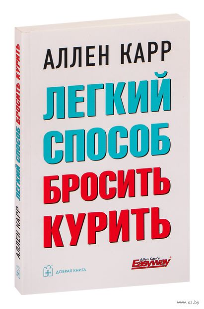

В прошлом высококвалифицированный бухгалтер, Аллен Карр был заядлым курильщиком и выкуривал по сотне сигарет в день. Эта привычка грозила разрушить всю его жизнь, пока в 1983 году, после бесчисленных и безуспешных попыток бросить курить, он не разработал собственный способ раз и навсегда избавиться от никотиновой зависимости, ныне известный всему миру как "Лёгкий способ бросить курить".
Его метод, демонстрируя феноменальную эффективность, получил признание среди специалистов, приобрёл широкую популярность и пользуется огромным успехом во многих странах мира. Аллен Карр создал всемирную сеть клиник, специалисты которых помогают курильщикам бросить курить и преодолеть зависимость от никотина. Книги Аллена Карра изданы на двадцати языках и стали бестселлерами.

Книга для курящих людей
Лучшие цитаты из книги
"Курение - это не привычка. Это - наркотическая зависимость и болезнь."
"Если бы мы курили ради удовольствия, никто бы не стал курить больше одной сигареты."
"Как здорово! Я свободен! Кончилось это никотиновое рабство! Больше никогда не засуну в рот эту гадость!"
Об авторе
А́ллен Карр (англ. Allen Carr) - борец с курением, основатель международной сети клиник "Легкий способ" (англ. "EasyWay"), помогающей курильщикам бросить курить применяя методику, описанную в его книгах, среди которых наиболее известна "Легкий способ бросить курить". Методика Аллена Карра основана на самоанализе курящего и его личном опыте курильщика со стажем более 30 лет. Кроме того Аллен Карр является автором нескольких книг посвященных освобождению от алкогольной зависимости, лишнего веса, некоторых фобий.